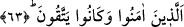

Bu sebepledir ki el-Kevâşî’de şöyle denilmektedir: “Onlara” ahirette “korku yoktur
ve onlar üzülmeyeceklerdir.” Yoksa Allah’ın velileri dünyada korku ve üzüntü
bakımından diğerlerinden çok daha ileridedirler.”
Onlara bu hallerin ârız olması şu yüzdendir: Çünkü onların gâyesi sadece Allah’a
tâatte bulunmak ve O’nun rızâsına nâil olmaktır. Bu gâyenin gerçekleşmesi, Allah
katında değerli olmayı ve yakınlığı da peşinden getirecektir. Cenab-ı Hak’ın vaadi
gereği bunun gerçekleşmesinde, hiçbir şüphe yoktur ve elden kaçırılma ihtimali de
bulunmaz. Bunun hâricinde olup da bazen elde edilen bazen de elden kaçırılan dünyevî
işler ise onların maksadları arasında değildirler. Dolayısıyla ister olsunlar ister
olmasınlar fark etmez. Bu gibi şeylerin zararından endişe edip sağlayacağı yararı
kaçırmaktan dolayı üzülmezler. Nitekim el-İrşâd’da böyle geçmektedir.
İşin aslı şudur: Allah dostları hüviyyet-i ahadiyyetde fânî oldukları için ulaştıkları
mertebenin ötesinde bir gâyeleri ve düşünceleri kalmaz ki korkup üzülsünler. Hz.
Hüdâyî (k.s.)’un Nefâisü’l-mecâlis’inde böyle geçmektedir.
63. Onlar îmân edip de takvâya ermiş olanlardır.
“Onlar îmân edip de takvâya ermiş olanlardır.” Bu ifâde şöyle düşünülebilecek bir
soruya cevaptır: “Onlar kimdir, bu kıymetli mertebeyi elde etmelerinin sebebi nedir?”
İşte bu soruya cevâben şöyle denildi: Onlar, bütün hayırlara ulaştıran ve bütün
şerlerden alıkoyan takva ile Allah’tan gelen her şeye îmân etmeyi kendilerinde toplayan
kimselerdir.
Allâme şeyhimiz (Osman Fazlı Efendi) der ki: “Allah’ın velileri, şeriat ve tarikat
mertebesinde kendilerinden kötü amel ve huyların sâdır olması, mârifet ve hakikat
mertebesinde ise kendilerinden gaflet ve telvînât hallerinin ortaya çıkması konusunda
Allah’tan sakınırlardı. Çünkü onlar tabîatlarını şeriat, nefislerini tarikat, kalblerini
mârifet, ruhlarını ve sırlarını da hakikat yardımıyla ıslâh ederlerdi. Şu halde şüphe yok
ki onlar Allah dışındaki tüm varlıklardan (mâsivâ) sakınırlar.”
Fakir (Bursevî) şöyle der: Şeyhimiz bu sözleriyle buradaki takvâdan kasdedilenin, bu
mertebelerin üçüncüsü olduğuna işaret etmektedir. Bu üçüncü mertebe insanoğlunun
sırrını Hak’dan ve tamâmıyle O’na yönelmekten alıkoyan her şeyden uzaklaşmasıdır. Bu
mertebe, aynı zamanda daha aşağıda yer alan îmânın ifâde ettiği şirkten korunma
mertebesini ve günah görülen bütün fiil ve terklerden kaçınma mertebesini içine alan bir
mertebedir. Veliler, Allah’a yönelme ve (mâsivâdan) kaçınma konusunda istîdâd
derecelerinin farklılığına göre farklı derecelere sahiptirler. Bu derecelerin en ilerisi,
peygamberlerin himmetlerinin ulaştığı derecedir. Peygamberler, nübüvvet ve velilik
riyâsetlerini bir arada bulundurmaktadırlar. Maddî âleme dâir bilgilerle ilgilenmeleri,